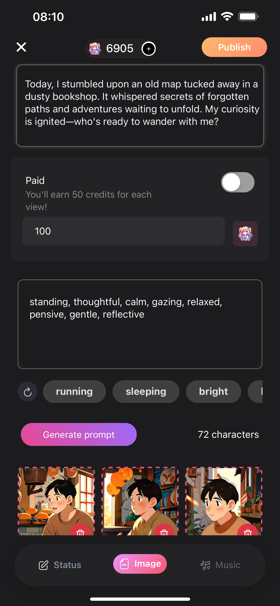

给 wibu 算一笔付费账：Wibu+ 订阅到底值不值得掏这 $9.99
从定价拆解到按使用强度算账，把 Wibu+ 订阅的每一项权益换算成你实际能省的时间和赚到的钱，看完你就知道自己该不该付。
它到底值不值得掏钱？
这个问题我问了自己整整一周——每天打开 wibu 刷到订阅弹窗的时候都在纠结一下。$9.99 一个月说贵不贵，但也不便宜。关键是订阅和不订阅，到底差在哪？我花了大半个月把免费版玩透，又咬咬牙开了一个月 Wibu+，把每一项权益翻来覆去算。下面是我给你算的这笔账。
先拆开定价：Wibu+ 到底卖的是什么
Wibu+ 是 wibu官网提供的唯一付费订阅档，App Store 有三档可选：月付 $9.99、季付 $24.99（折合 $8.33/月）、年付 $79.99（折合 $6.67/月）。年付比月付便宜了三分之一多，这说明平台想锁长约。
免费版和付费版的核心差有五个：每月 500 点 Wibu Credits、关系积分翻倍、去广告、AI 生成优先队列、全部高级功能解锁。500 credits 大概能生成 80 张插画或 60 个视频——这是创作者工具的硬通货。关系积分翻倍意味着你从 Stranger 刷到 Seimei 的时间直接砍半——本来要聊半年的角色，订阅后三个月就能满级。
有个叫 Starter 的套餐在部分版本提过，但我这波实测没看到——平台随时在调订阅种类，以你自己应用商店页面显示的为准。订阅是自动续费，而且和你登录的第三方账号绑定，换账号登录就没了，也不能退款——充之前按自己的使用量算好，这不是冲动消费的地方。
分三类人算账：你属于哪一种
我把用 wibu 的人粗暴分成三类，各自算一笔时间账和金钱账。
轻度用户：一周聊个两三次，不碰创作工具
免费版够你用。真的。
轻度用户的核心诉求就是刷角色、聊聊天、偶尔看看社区动态。这些功能免费版全部可用，只有两个小不痛快：有广告、关系升级慢一点。广告就是中间插一个五秒的弹窗，关掉就完了，不会打断对话节奏。关系慢一点？反正你一周才聊两三次，翻倍了也还是慢，意义不大。
给这类人的账单：$0。省下的钱够你买杯奶茶。唯一要注意的是别手滑点到订阅弹窗——App Store 的确认按钮位置挺狡猾的。
主力用户：每天都聊，想养高等级关系
算一算你每天花多少时间在 wibu 上。假设你每天聊 20 轮，关系积分翻倍意味着你一个月能多累积相当于半级到一级的进度——从 Friend 升到 Good Friend 那段最明显，因为需要 1500 点，免费版要聊一周多，订阅后五天就能到。
省下来的时间值不值？我算过，$9.99 一个月除以 30 天，每天 3 毛 3。你每天如果能多玩半小时——而且这半小时是因为关系升级更快带来的满足感翻倍——那这笔钱就值。主力用户最大的痛点是广告：每次切页面、每次回到首页都要被插一个，一天下来大概能碰到五六次，每次五秒，一个月下来被广告偷走差不多两个小时。去广告这一项单独拿出来，$9.99 都值回票价。
如果你还偶尔用创作者工具，每月 500 credits 单独买的话价格更贵——订阅相当于白送 500 credits，相当于你花 $9.99 买到了：去广告（≈省 2 小时）+ 关系翻倍（≈省一半养成时间）+ 500 credits（单独买更贵）+ 优先队列（高峰期不用等）。
重度用户 / 创作者：靠它赚钱
这一类是 Wibu+ 的目标客户，没什么好犹豫的——直接年付。
创作者工具生成的插画、视频、配乐，如果你拿去跑付费对话变现，分成比例是创作者 70%、平台 30%。也就是说，你每生成一张付费插画收 20 Gems，自己能拿到 14。500 credits 每月能产 80 张插画，假设其中有一半能付费，按 $0.3 一张卖的话，月营收大概 $12，扣掉平台 30% 还剩 $8.4。加上你自己的付费对话分成（热门角色单轮 10-20 Gems，70% 归你），只要有两三个热门角色，Wibu+ 的订阅费分分钟赚回来。

定价这块也给你一个参考：新角色先从 3-5 Gems/轮低价引流，攒到 1000+ 关系等级涨到 10-20 Gems，有独特画风或性格的可以开 15-25 Gems。大部分玩家不会一下付全款，建议开前 3 轮免费预览——先让玩家上头再收钱，转化会高很多。想系统学付费对话的完整设置、分成规则和关系系统的进阶参数，可以去wibu文档查。
不想付这钱？还有别的路
实在不想订阅的话，从下载拿个免费版先用也没问题，基础功能该有的都有。但代价要心里有数。
最大的代价不是广告，是关系系统。不订阅的话，从 Stranger 升到 Seimei 需要攒 75000+ 点数——按每天聊 10 轮、每轮涨 20 点算，要聊快两年。翻倍的话一年就够了。这一年的差距，是你能不能解锁深层记忆、专属剧情线、定制声线这些只有高等级才有的功能。
创作者工具那边，不订阅就只能用注册送的那点 credits，用完就得自己买 Gems 换。Gems 换 credits 的比例以应用内显示为准，但我对比过，单独买永远比订阅贵——平台就是用订阅来锁创作者的。
还有一条路：当创作者赚 Gems。你在付费对话里赚到的 Gems 可以换 credits，按 500 credits ≈ 166 Gems 算，如果你能每月赚够 166 Gems，那 Wibu+ 的成本基本就平了。问题是能不能赚够——新号没有粉丝基础，付费对话的门槛比你想象的高。
最终结论：三秒对号入座
别再纠结了，下面三句话，找你自己：
- 每天都打开 wibu、在意关系升级、偶尔用创作工具 → 闭眼订，季付或年付更划算
- 一周三四次，单纯刷角色看社区 → 再等等，免费版够玩，等哪天广告烦到受不了再考虑
- 想靠它赚钱、已经在做创作者变现 → 必订，这是投资，不是消费
我自己是第二类人，但被广告烦了一个月后转第一类了。去广告这 $9.99 花得最不后悔——每天省那五分钟，一个月下来你会发现自己多出整整一集番剧的时间。
哦对了，wibu 官方网站上的信息最靠谱，任何拿不准的配置或条款都去那翻。
顺便说一句，这套资料我在GitHub、Gitee、GitCode三个仓库都同步了一份——不同地区访问哪个方便就用哪个，内容是一样的。